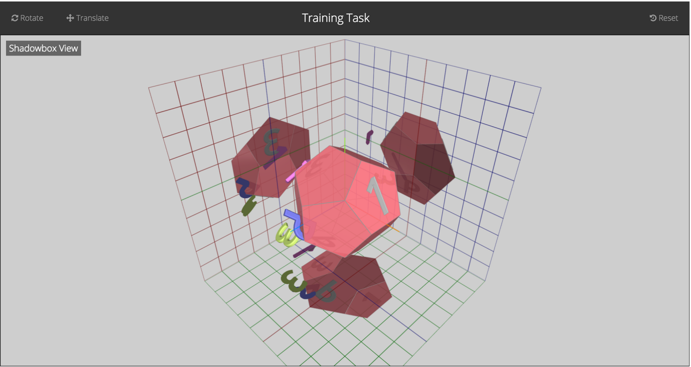
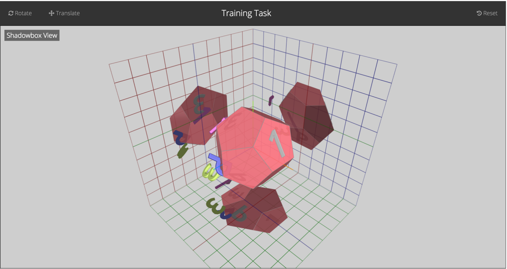
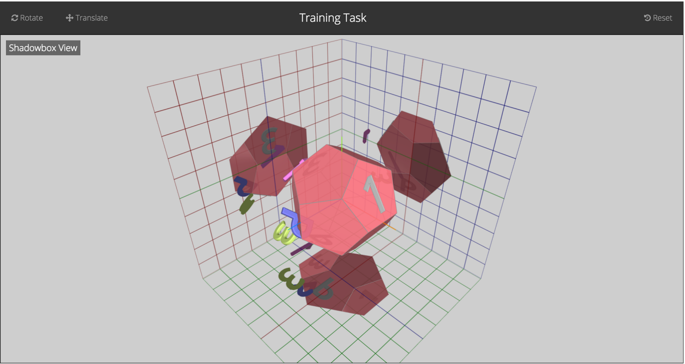

Left: Traditional multi-view 3DUI designed to compare against Interactive Shadows.
Right: Appearance of the Interactive Shadows controller.
3D User Interfaces (3DUIs) support many important applications, including: creating virtual scenes for video games and movies; creating models for 3D printing and viewing 3D models of medical information. Despite the importance of these applications, the 3D user interfaces of these modelling packages have not changed much since their inception. While many interfaces have been proposed, most 3DUIs have not changed. In order to determine the strengths of different interfaces, we performed two experiments:
Rotation controller is used to rotate a liver with tumor. Source: Bade, Ragnar, Felix Ritter, and Bernhard Preim. "Usability comparison of mouse-based interaction techniques for predictable 3d rotation." Smart graphics. Springer Berlin Heidelberg, 2005.
Below we present a summary of our goals and findings. Please see documents for our full proposal and reports.
We aim to determine whether:

Left: Traditional multi-view 3DUI designed to compare against Interactive Shadows.
Right: Appearance of the Interactive Shadows controller.
Appearance and interaction design for the rotation controllers. From top to bottom: Discrete Sliders, Arcball and Two Axis Valuator.
Interactive shadows were found to be significantly better in terms of distance accuracy for one task, which relied on participant distance estimations. This suggests that the interactive shadows interface might help users approximate relative object positioning. No other significant interactions were found. We found key confounding factors that could contribute to participant performance and also draw attention to concepts that could help future researchers in this area when conducting similar investigations.

Results for Interactive Shadows Evaluation
We found no statistically significant differences between Arcball and Two Axis Valuator. However, we found the Discrete Sliders to be significantly more accurate for simple matching tasks (a medium to large effect) but slower for complex matching, and inspection tasks (a small to medium effect of approximately two seconds). This indicates that the Discrete Sliders are most appropriate in situations where fine-grained accuracy is valued over speed, while for other tasks, such as inspection, either Arcball or Two Axis Valuator are better suited.
Results for Rotation Controller Evaluation
{kind=link}